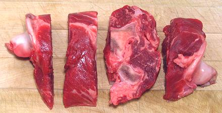

Beef Neck Bones

These are sold, sawed into chunks, as an economical cut to use when
making beef stock. There is quite a bit of meat on them, but it is
difficult to remove until well cooked due to the complexity of the
bones it adheres tightly to.
In the United States, the spinal chord must be removed due to
the possibility it could harbor mad cow disease.
More on Cuts of Beef.
Cooking:
Toss these in with all the other offcuts you
have for making beef stock. They are fairly meaty, but the meat is
not recoverable until well cooked.
ab_neckbz 131029 - www.clovegarden.com
©Andrew Grygus - agryg@clovegarden.com - Photos
on this page not otherwise credited © cg1
- Linking to and non-commercial use of this page permitted